La BB 8500 version 
J.C. Théroanne et T. Stachnik ont réalisé un pack de BB 8500 petites cabines.
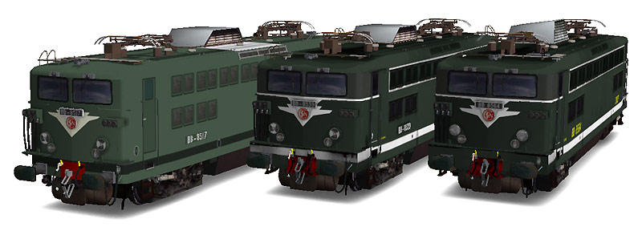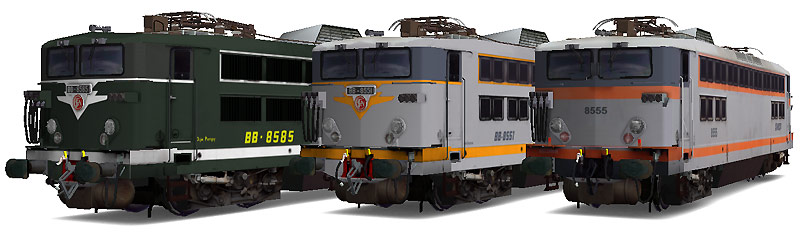
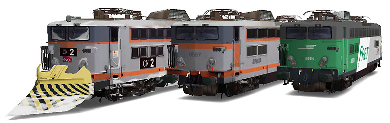
Ferrovia - 03 Juin 2012
BB 8500
Les BB 8500 sont des locomotives de moyenne puissance dérivant des BB 25500 et limitées à l'alimentation en courant continu sous 1,5 kV.
Elles disposent de bogies monomoteur à double rapport d'engrenages manoeuvrables à l'arrêt, de l'aptitude à l'Unité Multiple et à la réversibilité, ce qui les rend polyvalentes. Elles peuvent ainsi tirer de lourds trains de marchandises ou tirer/pousser des trains légers régionaux ou de banlieue à arrêts fréquents.
Les bogies à faible empattement, boites d'essieux internes et réducteur en porte-à-faux n'ont pas une très bonne tenue en voie, ce qui leur vaut le surnom de "Danseuses" comme leurs équivalents bicourant BB 25500 ou monophasé BB 17000.
La livraison des 146 machines de la série s'est étalée de 1964 à 1974 et déroulée en plusieurs étapes. Plusieurs sous-séries présentent des différences notables de construction, dont le châssis renforcé puis allongé ou les persiennes. Ainsi, à partir de la BB 8588, les machines possèdent des cabines largement agrandies et des persiennes filtrantes en inox.
A cause de leur inconfort, les machines à petites cabines ont été réduites à des parcours restreints. En 1997, 31 machines sont déclassées à la remonte de rames vides entre dépôts et gares terminus. Elles sont rebaptisées BB 88500.
En 2001, douze autres machines sont utilisées en unités multiples indéformables pour la pousse en Maurienne. Elles sont renumérotées BB 8700. Ces machines ont eu droit à l'agrandissement partiel d'une cabine afin d'installer un fauteuil de conduite moderne en place du tabouret. Les BB 8500 petites cabines affectées aux TER Bourgogne ont droit à la même amélioration. La cabine non modifiée reste inutilisée car collée à une rame réversible. Les portes de la cabine agrandie sont peintes en orange pour la repérer facilement lors des formations de rames.
Le grand nettoyage des anciennes séries de locomotives Fret a provoqué la radiation d'un grand nombre d'engins dont les BB 8700, remplacés par des BB 27000. Ensuite, ce sont les locomotives Transilien qui ont été chassées par les BB 27300. Outre les BB 88500, les 8500 encore en service sont désormais affectées aux activités régionales. La livraison continue d'automotrices neuves les poussent lentement mais sûrement vers la sortie.
Quelques données techniques
Constructeur : Alstom
Tension d'alimentation : continu 1,5 kV
Chaîne de traction : Banc rhéostatique
Motorisation : 1 moteur par bogie, double rapport d'engrenage, transmission par anneau dansant.
Puissance totale : 2940 kW
Aptitude à l'UM et à la réversibilité
Longueur : 14,70m, 14,94m ou 15,57m
Masse : 78,3t, 79,5t ou 79,7t
Pantographes : 2 AM18B
Pour plus d'info :
La fiche BB 8500 sur Wikipedia
Fiche technique des BB 8500 de Florent Brisou
L'inventaire des BB 8500 sur Trains du Sud-Ouest
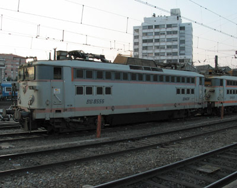
La BB 8555 délavée à Toulouse (13/07/2003)
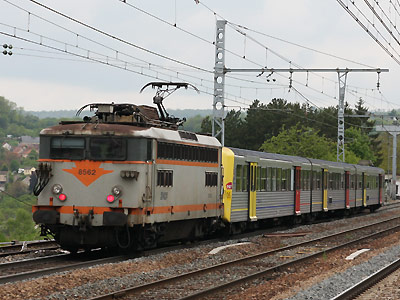
La BB 8562 pousse une RRR Bourgogne à Malain (14/05/2010)
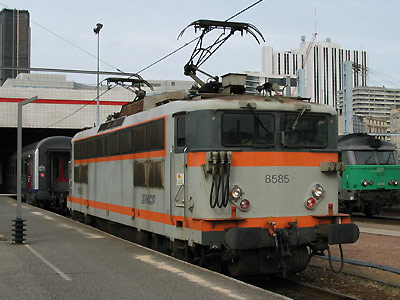
La BB 8585 se met en tête d'un Paris-Le Mans à Vaugirard (14/04/2003)
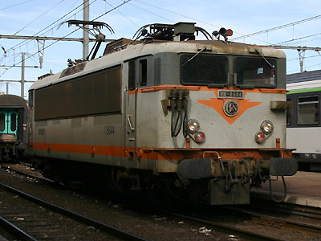
La BB 8644 detelée à l'arrivée de son train à Cerbère (07/08/2005)
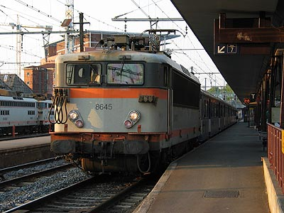
La BB 8645 attelée à une RIO 88 Midi-Pyrénées à Toulouse (13/07/2003)
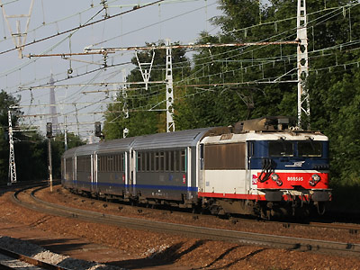
La BB 8595 IdF remplace une BB 9200 sur un TER Paris-Le Mans (23/06/2010)
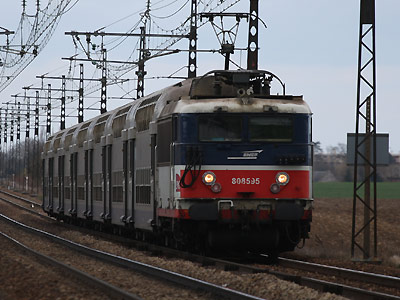
La même BB 8595 avec une VO2N Centre (27/03/2010)
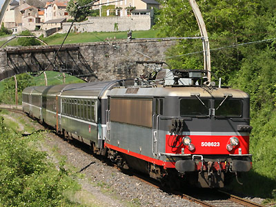
La BB 8623 Multiservice avec "l'Aubrac" à Compeyre (18/05/2009)
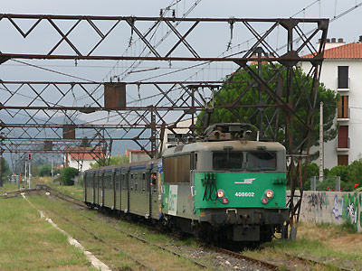
La BB 8602 sous l'étonnante caténaire de la ligne Perpignan-Villefranche à l'Ille sur Têt (10/08/2005)
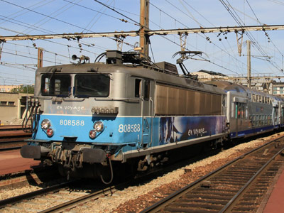
La BB 8588 "En voyage" à Versailles Chantiers (10/09/2011)
La BB 8500 version 
J.C. Théroanne et T. Stachnik ont réalisé un pack de BB 8500 petites cabines.
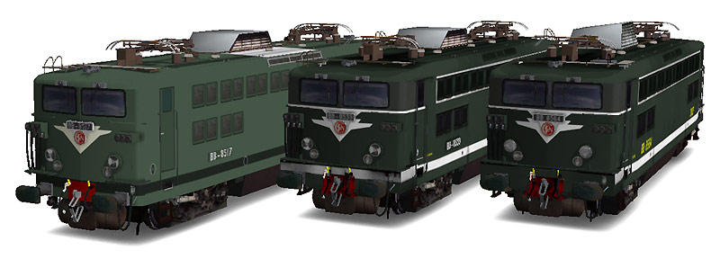